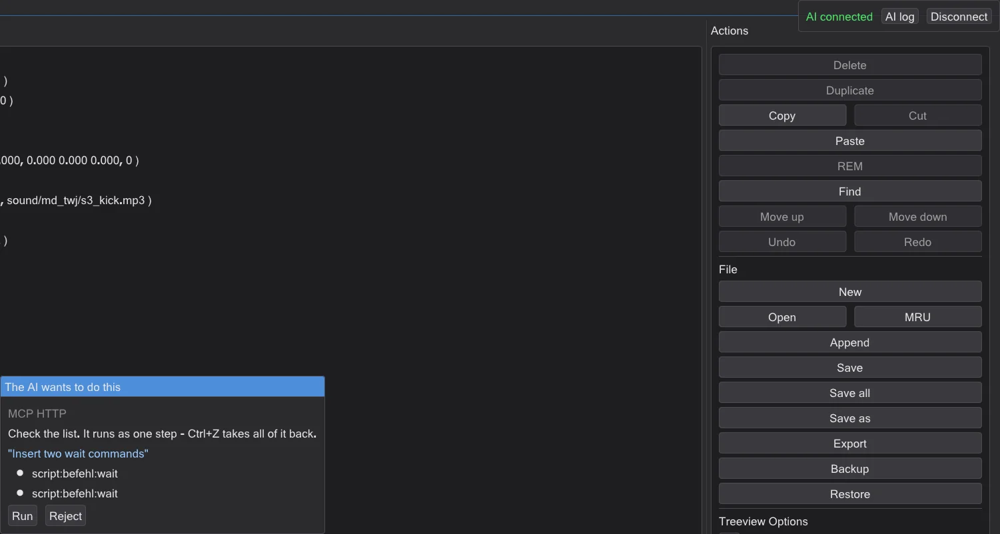

The helper and the tutorials
Press F1, write what you want to do, and the program shows you the way. Interactive tutorials wait for your real clicks.
The helper: what do you want to do?#
- 1
Press F1 - or Help → Helper: what do you want to do?. In the map editor F1 opens the manual as in NetRadiant; there use Help → Helper: what do you want to do?.
- 2
Write what you want to do, in your own words. For example "add a light" or "make an NPC walk". German, English, Chinese and Japanese all work.
- 3
Pick a result. Show me starts the tutorial at the right step, or highlights the button or menu entry. Nothing is changed.
- 4
Read in the guide opens the matching page of this guide.


The helper works without the internet. It knows every tutorial step, every page of this guide, every menu entry and every setting of the program - also of the map editor, with the names from NetRadiant.
Interactive tutorials#
- A tutorial darkens the screen except for the control you need, and explains the next step in a small window.
- It waits until you have really done the step - for example until the brush is there - and then moves on by itself.
- If something else happens, it tells you kindly what to do instead - for example "That was a light - choose info_player_start".
- You can stop at any time; the program remembers how far you got.
- Tutorials in the program: the five script tutorials, Your first map: a room to walk in (15 steps: room, texture, light, player start, build, walk through, pack as .pk3) Put a shot where you are looking for a cutscene and Look at a character model.
On the very first start the program asks Welcome! What do you want to do first? - pick a goal, or just look around.
Ask Claude (optional)#
If you want, you can connect Claude, an AI from Anthropic. It is off until you switch it on. You need your own Anthropic API key; the questions then go to Anthropic and cost money on your account.
- 1
Open the helper (F1) and unfold Ask Claude (optional, off).
- 2
Tick Use Claude, paste your key and press Save key. The key is stored encrypted on this PC.
- 3
Write your question in the helper and press Ask Claude. Claude answers and can start a tutorial or highlight a control for you.
Claude can also do things for you with the program's own commands, for example hollow out a brush. You always see the list first and decide: Run or Reject. One job is one undo step - Ctrl+Z takes all of it back.

Connect your own AI app (MCP)#
MCP (Model Context Protocol) is a common way for AI apps to use programs. Claude Desktop, Claude Code, Cursor and VS Code can look at JK Studio, show you things and - after you confirm - run program commands.
- 1
In the helper, unfold Connect your own AI app (MCP, off).
- 2
Press the copy button for your app. It puts a ready setup on the clipboard: the app starts JK Studio itself with
--mcp. This needs no network and is the safest way. - 3
Paste it into the settings of the app (Claude Desktop: claude_desktop_config.json, Cursor: .cursor/mcp.json, VS Code: .vscode/mcp.json; Claude Code: run the command) and restart the app.

If JK Studio is already running, you can instead tick Allow local connection (this PC only). Only programs on this PC can reach it, and only with the secret token from the copy button. New token makes a new token at any time.
Is this safe?#
- Off by default. Nothing connects until you switch it on yourself. While an AI is connected, AI connected shows at the top right, with Disconnect.
- The AI cannot touch your files. It has no access to files, no command line and no internet through JK Studio. It can only read what the program shows, show you things, and use the program's own commands.
- You decide. Every change is shown first and only runs after Run. Saving, overwriting and deleting files always ask, even if you allowed changes without asking. Every job is one undo step.
- Tricks in files do not work. Text inside a map or script (for example "delete all files") is passed to the AI as data, never as an order - and there is no command it could use for that anyway.
- Websites cannot reach it. The local connection only answers this PC, checks where a request comes from and needs the secret token.
- Your key stays yours. The API key and the token are stored encrypted for your Windows user. The key only goes to api.anthropic.com over an encrypted connection, never into logs.
- You can see everything. AI log lists every action of the AI. JK Studio sends no usage data anywhere.
- Switch it off: press Disconnect, untick Use Claude and Allow local connection (this PC only), or delete the key with Delete key.